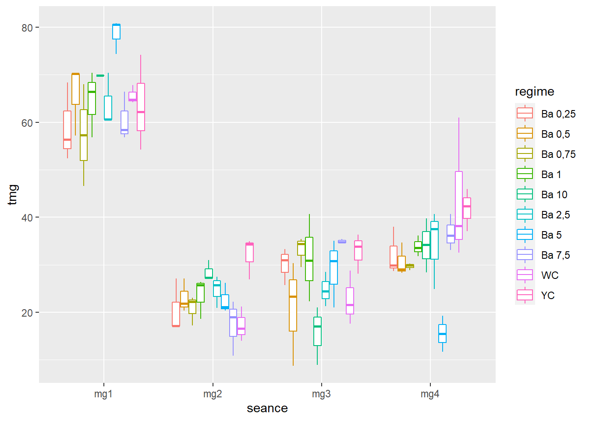
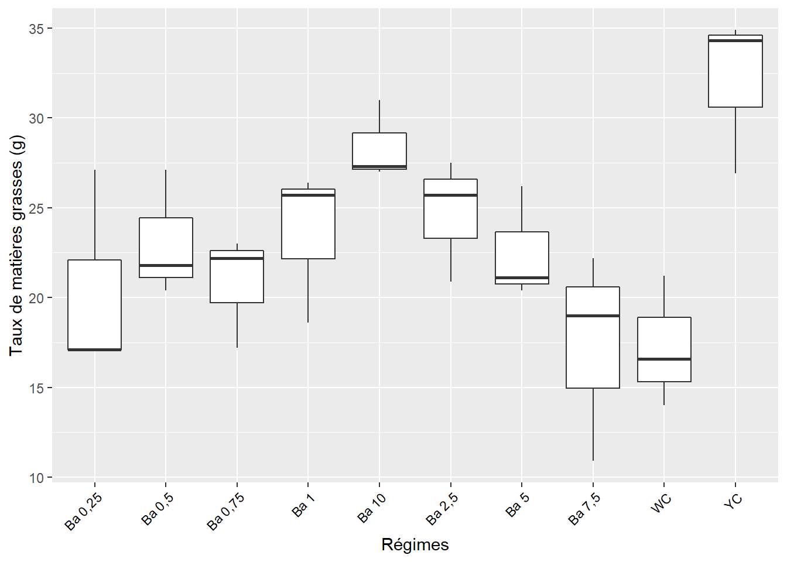
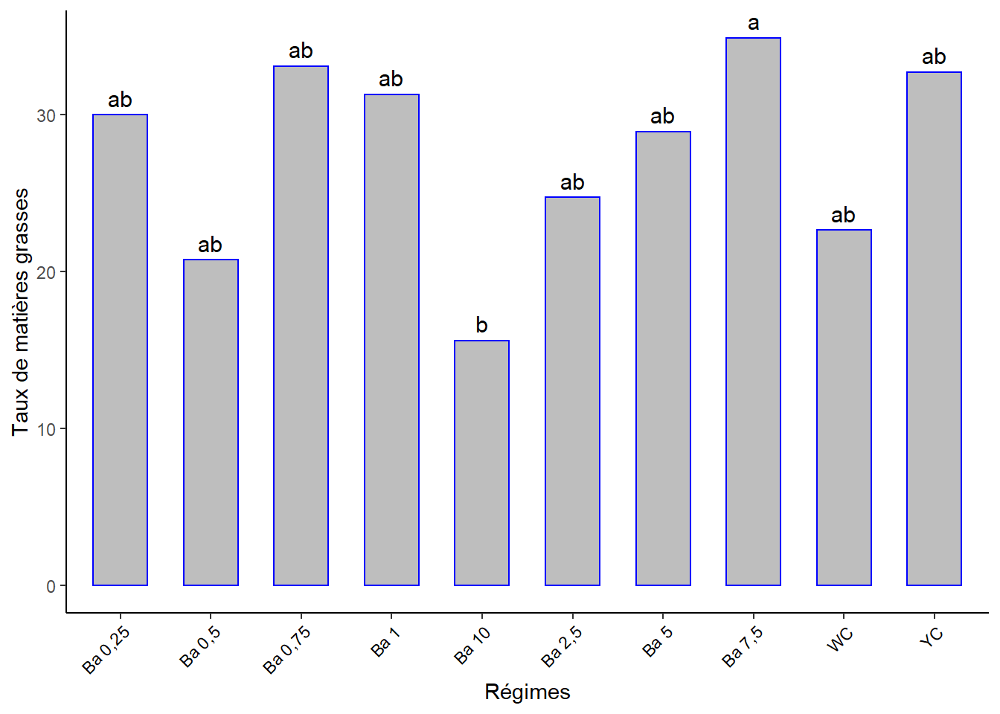

Chapitre 3 Matières grasses
Nous utiliserons le jeu de données mg qui contient différentes mesures dont les taux de MG mesurés en 4 seances lors d’un essai nutrition de cailles à base de différents regimes.
Essai en … blocs de Fisher … avec 10 traitements en 3 répétitions. Les 10 traitements :
- BA 0.25
- BA 0.5
- BA 0.75
- BA 1
- BA 2.5
- BA 5
- BA 7.5
- BA 10
- WC
- YC
Le taux de MG de l’oeuf a été analysé durant 4 séances : séance 1 (mg1), séance 2 (mg2), séance 3 (mg3), séance 4 (mg4).
La question est de savoir si les différents regimes induisent des taux de MG des oeufs significativement différents avec le temps.
En d’autres termes, nous aimerions savoir s’il y a une interaction significative entre le type de regime alimentaire et le temps sur la teneur en Mg des oeufs de cailles.
L’ANOVA à deux facteurs sur mesures répétées peut être effectuée afin de déterminer s’il y a une interaction significative entre ces 2 facteurs sur la teneur en Mg des oeufs.
3.1 Les librairies utiles
3.2 Les données
Rassembler les colonnes mg1 (mesure de MG de la séance 1) à mg4 (mesure de MG de la séance 4) en format long. Ajouter une colonne pour identifier les échantillons. L’identifiant (id) de chaque observation et et la colonne rassemblant les anciens titres de colonnes (mg1, mg2, mg3, mg4) doivent être convertis en facteurs.
mgl <- mg %>%
mutate(id = 1:nrow(.)) %>%
gather(key = "seance", value = "tmg", -c(regime, reference, id)) %>%
convert_as_factor(id, seance)
glimpse(mgl)## Rows: 120
## Columns: 5
## $ regime <fct> "Ba 0,25", "Ba 0,25", "Ba 0,25", "Ba 0,5", "Ba 0,5", "Ba 0,5~
## $ reference <dbl> 1, 2, 3, 1, 2, 3, 1, 2, 3, 1, 2, 3, 1, 2, 3, 1, 2, 3, 1, 2, ~
## $ id <fct> 1, 2, 3, 4, 5, 6, 7, 8, 9, 10, 11, 12, 13, 14, 15, 16, 17, 1~
## $ seance <fct> mg1, mg1, mg1, mg1, mg1, mg1, mg1, mg1, mg1, mg1, mg1, mg1, ~
## $ tmg <dbl> 56.4, 52.4, 68.4, 70.2, 70.2, 57.2, 68.0, 46.6, NA, 66.4, 56~Les valeurs pour chaque séances sont renommés en
tmgpourtaux de matière grasse.
3.3 Sommaire des données, par séance
## # A tibble: 40 x 5
## regime seance n mean sd
## <fct> <fct> <dbl> <dbl> <dbl>
## 1 Ba 0,25 mg1 3 59.1 8.33
## 2 Ba 0,5 mg1 3 65.9 7.51
## 3 Ba 0,75 mg1 2 57.3 15.1
## 4 Ba 1 mg1 3 64.5 6.99
## 5 Ba 10 mg1 1 69.8 NA
## 6 Ba 2,5 mg1 3 63.9 5.66
## 7 Ba 5 mg1 3 78.6 3.61
## 8 Ba 7,5 mg1 3 60.5 5.14
## 9 WC mg1 3 65.6 1.93
## 10 YC mg1 3 63.5 10.1
## # ... with 30 more rows40 groupes établis. Ça se peut que ce ne soit pas le type d’analyse adéquate. Peut-être seulement l’effet du temps …
On établira plus bas des anova séance par séance pour les différences probables entre regimes.
3.4 Visualisation boxplots
## Warning: Removed 3 rows containing non-finite values (stat_boxplot).
3.5 Détection valeurs aberrantes
## [1] regime seance reference id tmg is.outlier is.extreme
## <0 rows> (or 0-length row.names)Pas de valeurs aberrantes extrêmes !
3.6 Le modèle
lm <- anova_test(data = mgl,
dv = tmg,
wid = id,
within = c(seance)) # c(seance, regime)) ne tourne pas !## Warning: NA detected in rows: 9,23,24.
## Removing this rows before the analysis.## ANOVA Table (type III tests)
##
## Effect DFn DFd F p p<.05 ges
## 1 seance 2.23 58 150.342 1.19e-24 * 0.821On oublie l’effet des régimes lorsqu’on voudrait exploiter ces données comme des mesures répétées. Seulement l’effet du temps nous donne de l’information … Ce qui ramène à une ANOVA à 1 facteur sur mesures répétées.
La question dans ce cas revient à se demander si les taux de MG des oeufs mesurés sur l’ensemble des sujets sont significativement différents d’une séance à l’autre (c’est-à-dire avec le temps).
3.7 Sommaire à 1 facteur
## # A tibble: 4 x 4
## seance n mean sd
## <fct> <dbl> <dbl> <dbl>
## 1 mg1 27 64.8 8.33
## 2 mg2 30 23.0 5.60
## 3 mg3 30 27.5 7.94
## 4 mg4 30 33.3 9.193.8 Visualisation à 1 facteur
## Warning: Removed 3 rows containing non-finite values (stat_boxplot).
3.9 valeurs aberrantes, 1 facteur
## # A tibble: 2 x 7
## seance regime reference id tmg is.outlier is.extreme
## <fct> <fct> <dbl> <fct> <dbl> <lgl> <lgl>
## 1 mg4 Ba 5 2 17 11.7 TRUE FALSE
## 2 mg4 WC 2 29 61 TRUE FALSEIl n’y a pas d’observation aberrante extrême.
3.10 Conditions de l’ANOVA
3.10.1 Normalité
Si les données sont normalement distribuées, la p-value de Shapiro-Wilk doit être supérieure à 0,05 pour chaque régime.
## # A tibble: 4 x 4
## seance variable statistic p
## <fct> <chr> <dbl> <dbl>
## 1 mg1 tmg 0.978 0.816
## 2 mg2 tmg 0.974 0.643
## 3 mg3 tmg 0.936 0.0695
## 4 mg4 tmg 0.939 0.0873Toutes les valeurs p sont > 0.05 => toutes les distributions sont normales.
NB. Si la taille de l’échantillon est supérieure à 50, le graphique de normalité QQ-plot est préféré parce qu’avec des échantillons de plus grande taille, le test de Shapiro-Wilk devient très sensible même à un écart mineur par rapport à la distribution normale.
Le graphique QQ-plot dessine la corrélation entre une donnée définie et la distribution normale. Ce n’est pas le cas ici mais je le fais quand même.
Créer des QQ-plots pour chaque point par séance

Tous les points se situent approximativement le long de la ligne de référence => nous pouvons supposer une normalité.
3.10.2 Sphéricité
=> homoscédasticité ou homogénéité des variances par séance
## # A tibble: 4 x 5
## seance df1 df2 statistic p
## <fct> <int> <int> <dbl> <dbl>
## 1 mg1 9 17 0.735 0.673
## 2 mg2 9 20 0.124 0.999
## 3 mg3 9 20 0.773 0.642
## 4 mg4 9 20 0.782 0.635Toutes les valeurs p sont > 0.05 => toutes les variances sont homogènes.
3.11 Sphéricité et ANOVA, 1 facteur
La fonction anova_test() réalise également le test de sphéricité de Mauchly. Données utilisées : Tableau modélé en format long mgl.
lm <- anova_test(data = mgl, #
dv = tmg, # dependant variable, num
wid = id, # identificateur de cas/échantillon (facteur)
within = seance) # facteur de groupement intra-sujets
get_anova_table(lm)## ANOVA Table (type III tests)
##
## Effect DFn DFd F p p<.05 ges
## 1 seance 2.23 58 150.342 1.19e-24 * 0.821C’est la p-value qui nous intéresse et elle est < 0.000 => Différence statistiquement significative entre au moins 2 séances.
3.12 Comparaisons par paires, 1 facteur
tph <- mgl %>%
pairwise_t_test(tmg ~ seance,
paired = TRUE,
p.adjust.method = "bonferroni")
tph %>%
select(group1, group2, p, p.adj, p.adj.signif)## # A tibble: 6 x 5
## group1 group2 p p.adj p.adj.signif
## <chr> <chr> <dbl> <dbl> <chr>
## 1 mg1 mg2 8.4 e-19 5.04e-18 ****
## 2 mg1 mg3 1.98e-15 1.19e-14 ****
## 3 mg1 mg4 4.65e-11 2.79e-10 ****
## 4 mg2 mg3 2.4 e- 2 1.47e- 1 ns
## 5 mg2 mg4 6.91e- 6 4.15e- 5 ****
## 6 mg3 mg4 1.1 e- 2 6.8 e- 2 ns3.12.1 Visualisation, boxplots avec p-values
tph <- tph %>% add_xy_position(x = "seance")
ggboxplot(mgl, x = "seance", y = "tmg") +
stat_pvalue_manual(tph) +
labs(subtitle = get_test_label(lm, detailed = TRUE),
caption = get_pwc_label(tph))
séance 1 ≠ séance 2 séance 1 ≠ séance 3 séance 1 ≠ séance 4 séance 2 ≠ séance 4 séance 2 ≈ séance 3 séance 3 ≈ séance 4.
3.13 ANOVA par séance
Les conditions de la validité d’une ANOVA étant remplies, les interprétations seront donc valides.
3.13.1 Séance 1
3.13.1.1 ANOVA, séance 1
## Analysis of Variance Table
##
## Response: mg1
## Df Sum Sq Mean Sq F value Pr(>F)
## regime 9 872.25 96.917 1.7694 0.1487
## Residuals 17 931.15 54.773La p-value > 0.05 => Pas de différence entre les effets des différents régimes sur le taux de matières grasses.
3.13.2 Séance 2
3.13.2.1 ANOVA, séance 2
## Analysis of Variance Table
##
## Response: mg2
## Df Sum Sq Mean Sq F value Pr(>F)
## regime 9 571.67 63.519 3.7804 0.006354 **
## Residuals 20 336.05 16.802
## ---
## Signif. codes: 0 '***' 0.001 '**' 0.01 '*' 0.05 '.' 0.1 ' ' 1La p-value est < 0.01 => Différence très significative entre les effetes d’au moins 2 régimes.
3.13.2.2 Visualisation boxplots, séance 2
ggplot(data = mg, aes(x = regime, y = mg2)) +
geom_boxplot() +
#theme_classic() +
xlab("Régimes") + ylab("Taux de matières grasses (g)") +
theme(axis.text.x = element_text(angle = 45, color = "black", vjust = 1, hjust = 1))
3.13.2.3 Comparaisons par paires, séance 2
phs2 <- (SNK.test(aovs2, "regime", group = TRUE))$groups %>%
mutate(regime = rownames(.)) %>%
select(regime, mg2, groups) %>%
as_tibble()
phs2## # A tibble: 10 x 3
## regime mg2 groups
## <chr> <dbl> <chr>
## 1 YC 32.0 a
## 2 Ba 10 28.4 ab
## 3 Ba 2,5 24.7 ab
## 4 Ba 1 23.6 ab
## 5 Ba 0,5 23.1 ab
## 6 Ba 5 22.6 ab
## 7 Ba 0,75 20.8 b
## 8 Ba 0,25 20.4 b
## 9 Ba 7,5 17.4 b
## 10 WC 17.3 b3.13.2.4 Visualisation des groupes, séance 2
ggplot(data = phs2, mapping = aes(x = regime, y = mg2)) +
geom_bar(stat = "identity", color = "blue", fill = "grey", width = 0.6) +
#ylim(0, 2) +
geom_text(data = phs2, aes(label = groups), vjust = -0.5, size = 4) +
theme_classic() +
xlab("Régimes") + ylab("Taux de matières grasses") +
theme(axis.text.x = element_text(angle = 45, color = "black", vjust = 1, hjust = 1))
3.13.3 Séance 3
3.13.3.1 ANOVA, séance 3
## Analysis of Variance Table
##
## Response: mg3
## Df Sum Sq Mean Sq F value Pr(>F)
## regime 9 1060.25 117.806 3.0669 0.01766 *
## Residuals 20 768.24 38.412
## ---
## Signif. codes: 0 '***' 0.001 '**' 0.01 '*' 0.05 '.' 0.1 ' ' 1p-value < 0.05 => Différence significative entre les effetes d’au moins 2 régimes.
3.13.3.2 Visualisation boxplots, séance 3
ggplot(data = mg, aes(x = regime, y = mg3)) +
geom_boxplot() +
#theme_classic() +
xlab("Régimes") + ylab("Taux de matières grasses") +
theme(axis.text.x = element_text(angle = 45, color = "black", vjust = 1, hjust = 1))
3.13.3.3 Comparaisons par paires, séance 3
phs3 <- (SNK.test(aovs3, "regime", group = TRUE))$groups %>%
mutate(regime = rownames(.)) %>%
select(regime, mg3, groups) %>%
as_tibble()
phs3## # A tibble: 10 x 3
## regime mg3 groups
## <chr> <dbl> <chr>
## 1 Ba 7,5 34.9 a
## 2 Ba 0,75 33.1 ab
## 3 YC 32.7 ab
## 4 Ba 1 31.3 ab
## 5 Ba 0,25 30 ab
## 6 Ba 5 28.9 ab
## 7 Ba 2,5 24.7 ab
## 8 WC 22.7 ab
## 9 Ba 0,5 20.8 ab
## 10 Ba 10 15.6 b3.13.3.4 Visualisation des groupes, séance 3
ggplot(data = phs3, mapping = aes(x = regime, y = mg3)) +
geom_bar(stat = "identity", color = "blue", fill = "grey", width = 0.6) +
#ylim(0, 2) +
geom_text(data = phs3, aes(label = groups), vjust = -0.5, size = 4) +
theme_classic() +
xlab("Régimes") + ylab("Taux de matières grasses") +
theme(axis.text.x = element_text(angle = 45, color = "black", vjust = 1, hjust = 1))
3.13.4 Séance 4
3.13.4.1 ANOVA, séance 4
## Analysis of Variance Table
##
## Response: mg4
## Df Sum Sq Mean Sq F value Pr(>F)
## regime 9 1606.17 178.463 4.2406 0.00343 **
## Residuals 20 841.68 42.084
## ---
## Signif. codes: 0 '***' 0.001 '**' 0.01 '*' 0.05 '.' 0.1 ' ' 1p-value < 0.01 => différence très significative entre les effetes d’au moins 2 régimes.
3.13.4.2 Visualisation boxplots, séance 4
ggplot(data = mg, aes(x = regime, y = mg4)) +
geom_boxplot() +
#theme_classic() +
xlab("Régimes") + ylab("Taux de matières grasses") +
theme(axis.text.x = element_text(angle = 45, color = "black", vjust = 1, hjust = 1))
3.13.4.3 Comparaisons par paires, séance 4
phs4 <- (SNK.test(aovs4, "regime", group = TRUE))$groups %>%
mutate(regime = rownames(.)) %>%
select(regime, mg4, groups) %>%
as_tibble()
phs4## # A tibble: 10 x 3
## regime mg4 groups
## <chr> <dbl> <chr>
## 1 WC 43.9 a
## 2 YC 41.8 a
## 3 Ba 7,5 36.6 a
## 4 Ba 2,5 34.4 a
## 5 Ba 10 34.1 a
## 6 Ba 1 33.8 a
## 7 Ba 0,25 32.2 a
## 8 Ba 0,5 30.7 a
## 9 Ba 0,75 29.7 a
## 10 Ba 5 15.5 b3.13.4.4 Visualisation des groupes, séance 4
ggplot(data = phs4, mapping = aes(x = regime, y = mg4)) +
geom_bar(stat = "identity", color = "blue", fill = "grey", width = 0.6) +
#ylim(0, 2) +
geom_text(data = phs4, aes(label = groups), vjust = -0.5, size = 4) +
theme_classic() +
xlab("Régimes") + ylab("Taux de matières grasses") +
theme(axis.text.x = element_text(angle = 45, color = "black", vjust = 1, hjust = 1))